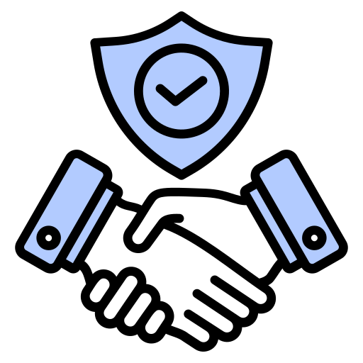
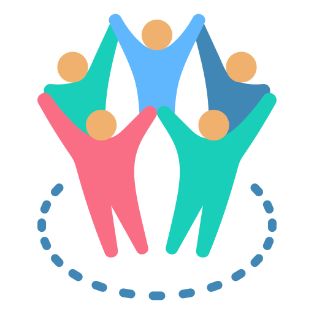

SolidaritySom

Empowering communities across Jubbaland through sustainable development and humanitarian action.
Is a national non-governmental, non-profit making, non-political, was established in June 1993 in Dhobley, Lower Jubba region, Somalia by a group of concerned intellectuals, educationists and women activists who are committed and decided to contribute to finding solutions to the complexity of the problems faced by the needy and vulnerable Somali communities affected in the civil conflicts, diseases, successive droughts and famine. Through successive meetings held, the founders agreed that the establishment of SGJ organisation as the most appropriate way to contribute to the already existing local and international wider efforts aimed to bring peace and reconstruct Somalia. The purpose of SGJ is to respond to the plights and needs of the most vulnerable communities in both rural and urban areas in Somalia by applying a holistic approach that combines the social economic development and ecological issues at both the national and grass-root levels in collaboration with the cross section of the local communities, state and local authorities, international agencies, donors, well-wishers around the world and Somali diaspora communities. SGJ’ community economic development program strategies aims only to strengthen the existing and on-going international communities, Somalia governments and local communities stabilisation and reconstruction strategic program interventions. It conforms to the laid down international and local program policies, strategies and plans. Utilising local knowledge and experiences by its members, SGJ applies comprehensive strategies and programs according to its capacity to deliver and respond to the most needy areas within Somalia regions and districts. SGJ acknowledges that in order to succeed it must have the community support and international assistance to achieve its intended mission and specific objectives, the organisation applies participatory strategic planning and community mobilization interventions that help to create and nurture grassroots ownership and sustainability. SGJ is legally registered under the Ministry of Planning and International Cooperation of Jubaland state of Somalia and Ministry Interior, Federalism and Reconciliation and has its headquarters in Kismayo and has field offices in Afmadow, Dobley of Lower Jubba region Burdhubo , Bardhere , Elwaak of Geddo Region,Ceelbarde and Atto of Bakool region of south west state of Somalia and Laas,Anood of Sool region and Jubaland State of Somalia SGJ is willing to operate in Middle Juba region Once is ousted and liberated from A/S.
To contribute to the promotion of sustainable social economic development and ecological preservation through building the livelihoods capacities of the poor and most vulnerable communities in Somalia.
SGJ vision is to see peaceful and prosperous Somali communities living in peace and harmony with respect of the ideals of the rule of law, peace, human rights and democracy.
Unwavering commitment in promoting the dignity of local communities based on principles of human rights, social justice, democrats, capacity building and the development. .

Innovation Encouraging the exploration of new ideas and developing workable approaches to benefit local communities.

Using resources in a considered, appropriate and transparent manner for maximum and timely benefit. .
A participatory strategy means involving the participants and the community in the organisation, starting from when it defines its objectives and ideas all the way through to programme implementation and evaluation .
The organisation is transparent to staff, members, communities and funding agencies, in both financial and programmatic senses
Through:
Executive Director
Oversees strategic direction, partnerships, Donars and organizational leadership.
Programs Manager
Leads program design, implementation, and community engagement.
Financer
Ensures transparency, accountability, and financial integrity.